Some images on this website only show the full image if this website is in fullscreen mode. I am sorry for any inconvenience this may cause.
1.The Portal Series:
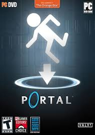
The Portal series is rated 12+.
Throughout the Portal series, you take on the role of Chell, a young woman trapped within the Aperture Science complex.
Chell is forced to solve tests of varying difficulty in chambers designed by an AI-gone-rogue named GLaDOS.
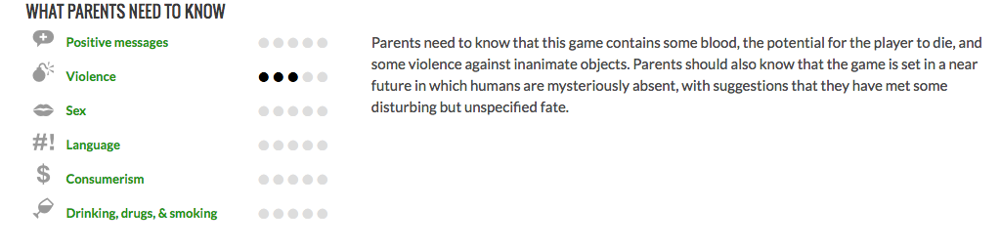
During the early stages of the testing, Chell is granted usage of the Handheld Portal Device (commonly referred to as the "portal gun").
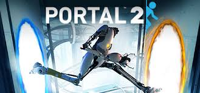
It is a piece of equipment developed by Aperture Science that allows Chell to create portals that act as gates between each other, allowing Chell to quickly traverse areas or reach normally unreachable places.
2. The Mirrors Edge Series:
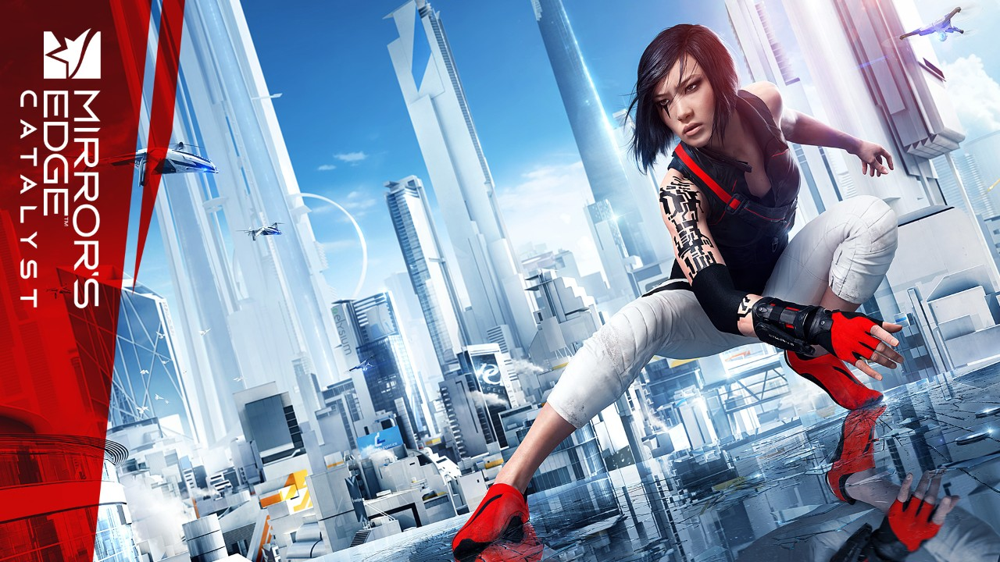
The Mirrors Edge series is rated 10+.
Mirror's Edge is set in a quasi-futuristic dystopian society, in which a network of "runners", including the main character, Faith, act as couriers to transmit messages while evading government surveillance.
In the style of a three-dimensional platform game, the player guides Faith over rooftops, across walls, through ventilation shafts, and otherwise within urban environments, negotiating obstacles using movements inspired by parkour.
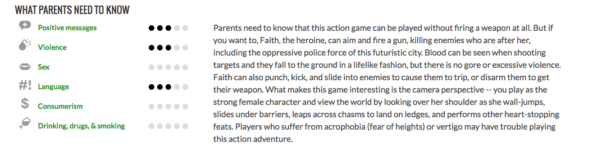
The game has a brightly colored style and differs from most previous first-person perspective video games in allowing for a greater freedom of movement with regard to its 3D environment, allowing for a wider range of actions—such as sliding under barriers, tumbling, wall-running, and shimmying across ledges; in having no heads-up display; and in allowing a range of vision which incorporated the legs, arms, and torso of the character as frequently visible elements on-screen.
3. The Halo Series:
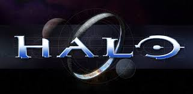
The Halo series is rated 18+.
You are Master Chief, John, SPARTAN-117. You are the most efficient piece of military equipment designed. When you are defending the planet Reach, a training ground for other SPARTANS and marines just as you trained there, the Covenant, a race of creatures that are aliens to Earth, whose first message sent to the human race was "It is our gods' will to destroy you", overwhelm the planet's defenses and "glass" the planet(use all their fire-power to destroy whatever is left of the planet). You are on the Pillar of Autumn, one of the smaller ships of the UNSC forces that left Reach.
It makes a blind jump into slipspace (a warp that forces the ship into an alternate reality, allowing it to go to places faster using coordinates) where you find the massive ring structure, Halo, looming before the Pillar of Autumn.
The Covenant (who followed the Pillar of Autumn through slipspace) use all their power to destroy the Pillar of Autumn. You are forced to leave the ship and take a life pod to the only place that may actually be safe, the ring.
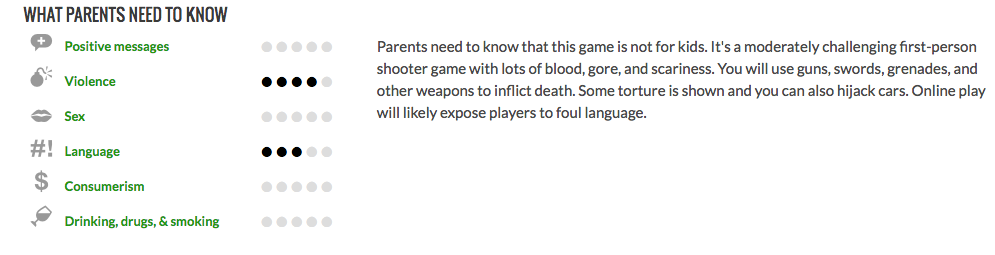
You continue to venture the ring with whatever UNSC forces to survive the devastating crash landing of the life pods. You discover the horrifying secret of why Halo is there and how to escape the ring world. But the Covenant are cunning and more advanced, and they never give up, even if it means sacrificing themselves.
4. The Fallout Series:
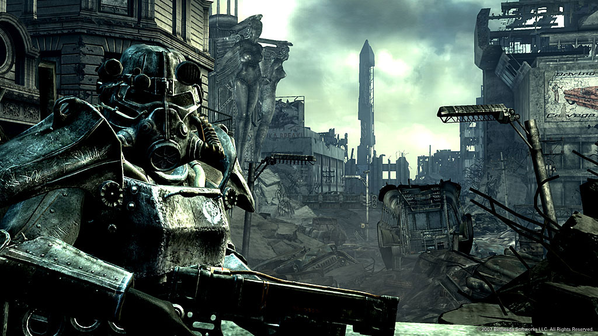
The Fallout series is rated 18+.
Taking place 200 years after a nuclear holocaust resulting from a conflict between the United States and China, the player takes control of one of the survivors from Vault 101.
When your father mysteriously goes missing, you are forced to flee the Vault and risk the barren wasteland that Washington D.C. has become to find your pa.
You soon learn that the wasteland is an unforgiving place.
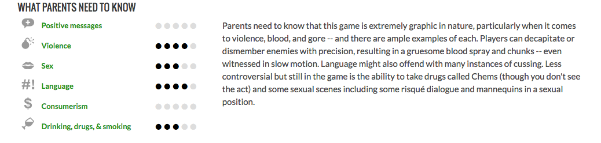
The humans who have survived arent a trustworthy bunch but they're nowhere near as bad as the mutants who prowl the ruins of civilization.
5. No Man's Sky:
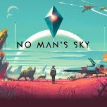
No Man's Sky is rated T for Teen.
No Man’s Sky is a game about exploration and survival, set in an infinite procedurally generated universe. Whether a distant mountain or a planet hanging low on the horizon, you can go there. You can fly seamlessly from the surface of a planet to another, and every star in the sky is a sun that you can visit. Where you’ll go and how fast you’ll make your way through this universe is up to you. It’s yours for the taking.
Every solar system, planet, ocean and cave is filled with wonder, but also danger and you are vulnerable. Your ship and suit are fragile, and every encounter can test your skills to the limit.
From dogfighting in space to first-person combat on a planet’s surface, you will face foes ready to overwhelm you. And one mistake could make you lose everything. You can never take your voyage lightly.
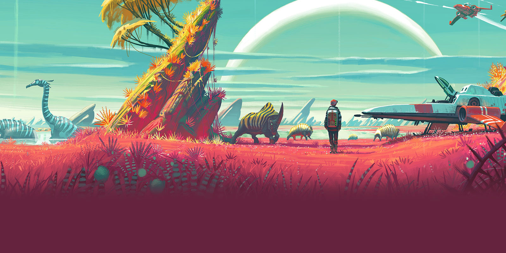
You’ll need to prepare. Collect precious resources on the surfaces of planets and trade them for the ships, suits and equipment that will take you to your destiny in the stars. Other players will also be exploring the same vast universe in parallel; perhaps you’ll make your mark on their worlds as well as your own. In No Man’s Sky, every victory and every defeat has long lasting consequences.
6. ADR1FT:
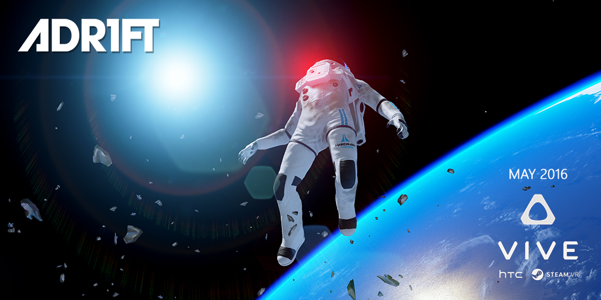
ADR1FT is rated 13+.
ADR1FT is a story of isolation and desperation. A cataclysmic event has happened aboard the Northstar IV, a space station developed by Hardiman Aerospace with the goal of researching off-world colonization.
The result has left the station in pieces and the crew dead, with the exception of the mission's leader, Commander Alex Oshima. Stranded in space with only a damaged EVA suit to protect her, Oshima must make her way through the wreckage of the Northstar IV, investigating the cause of the station's destruction, scavenging for any oxygen she can find and, most importantly, trying to find some way to get back home.
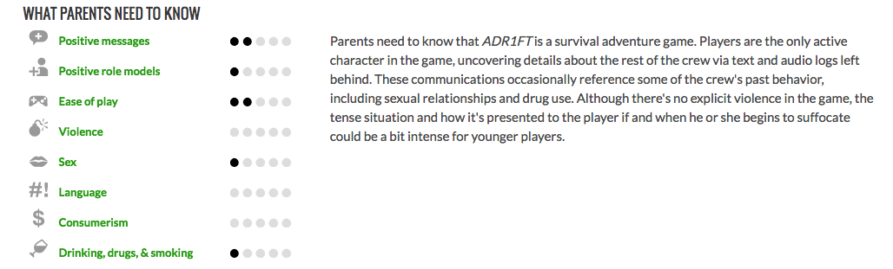
7. The XCOM Series:
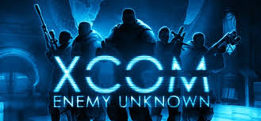
Set in the near future during an alien invasion of Earth, the game puts the player in control of an elite multinational paramilitary organization called XCOM and is tasked with defending the Earth.
The player commands troops in the field in a series of turn-based tactical missions; between missions, the player directs the research and development of new technologies from recovered alien technology and captured prisoners, expands XCOM's base of operations, manages XCOM's finances, and monitors and responds to alien activity.
8. The Mass Effect Series:
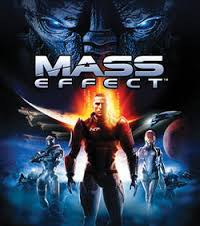
Mass Effect is rated 18+.
In the year 2148, explorers on Mars discovered the remains of an ancient spacefaring civilization.
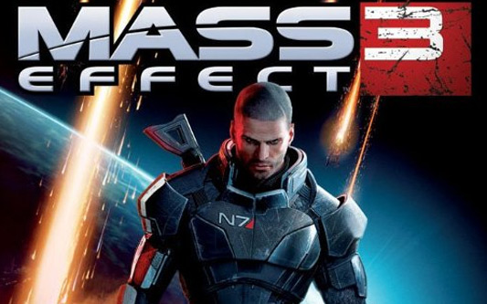
In the decades that followed, these mysterious artifacts revealed startling new technologies, enabling travel to the furthest stars.
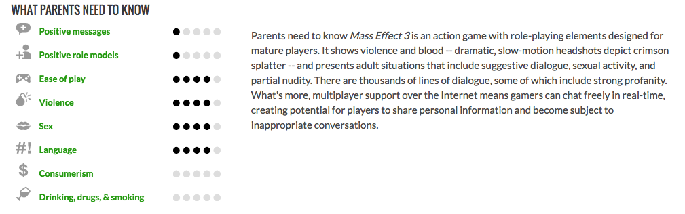
The basis for this incredible technology was a force that controlled the very fabric of space and time.They called it the greatest discovery in human history.The civilizations of the galaxy call it... MASS EFFECT.
9.The Destiny Series:
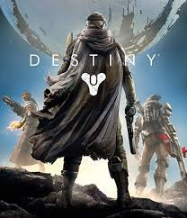
The Destiny series is rated 15+.
Players take on the role of a Guardian, defenders of Earth's last safe city as they wield a power called Light to protect the City from different alien races. Guardians are tasked with reviving a celestial being called the Traveler, while journeying to different planets to investigate and destroy the alien threats before humanity is completely wiped out.
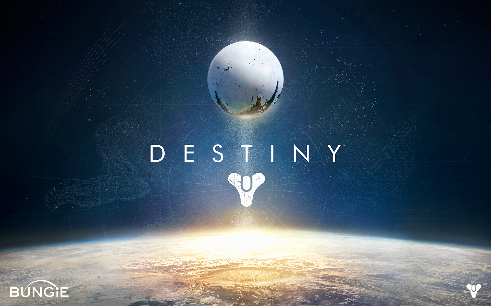
Since launch, Bungie has released three expansion packs furthering the story, adding new content and missions, and new PvP modes. Year One of Destiny featured two expansions, The Dark Below in December 2014 and House of Wolves in May 2015. A third, larger expansion, The Taken King, was released in September 2015 and marked the beginning of Year Two, changing much of the core gameplay.
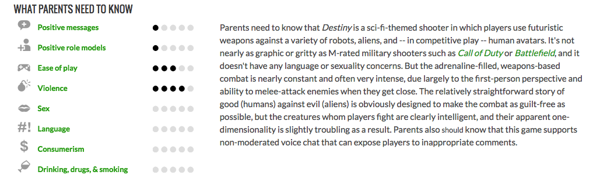
In December 2015, Destiny shifted to an event-based model, featuring more limited-time events. A new, large expansion called Rise of Iron will release in September 2016, and a full sequel to Destiny will release in 2017.
10. Breached:
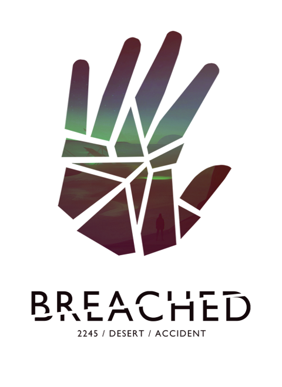
Breached is rated 13+.
Breached is a tale of survival, wrapped within a mystery, all told with a sci-fi twist. Your name is Corus Valott. It's the year 2245 and you've suddenly awakened from a deep cryogenic hibernation. Something has gone horribly wrong. The world around you has been lost to the elements.
You're surrounded by nothing more than a barren desert, abandoned buildings, and the questions of what happened and why you were left behind. Making matters worse, your shelter has been heavily damaged and left you with only eight days worth of oxygen.
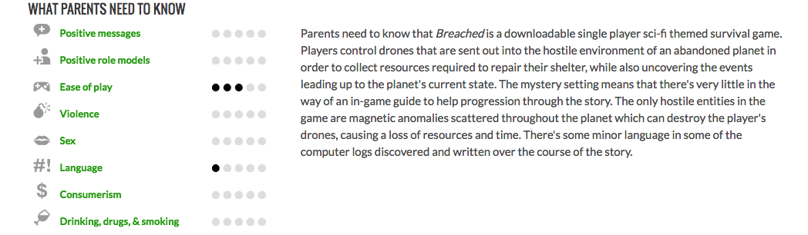
It's up to you to connect with remote drones, navigate the harsh environment and scavenge the materials you need to repair your shelter and maybe find out what's happened to the world during your hibernation.
I couldn't have put these video games in without talking about VR or virtual reality.
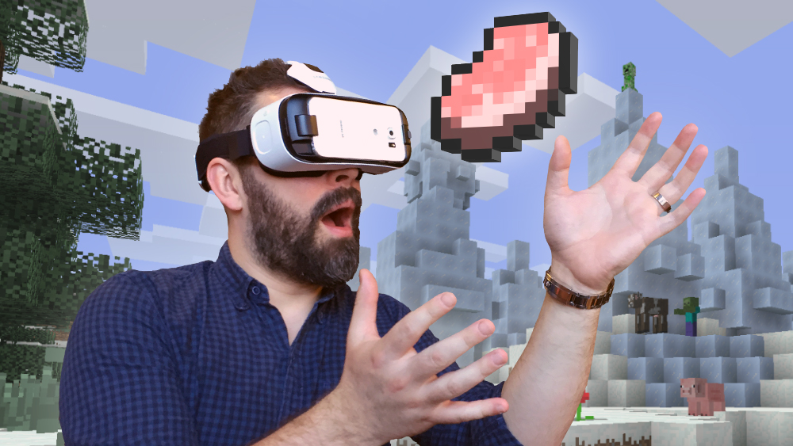
Virtual reality, also known as immersive multimedia or computer-simulated reality, is a computer technology that replicates an environment, real or imagined, and simulates a user's physical presence and environment to allow for user interaction. Virtual realities artificially create sensory experience, which can include sight, touch, hearing, and smell.
There is also something called AR or augmented reality. Augmented reality is the integration of digital information with the user's environment in real time.
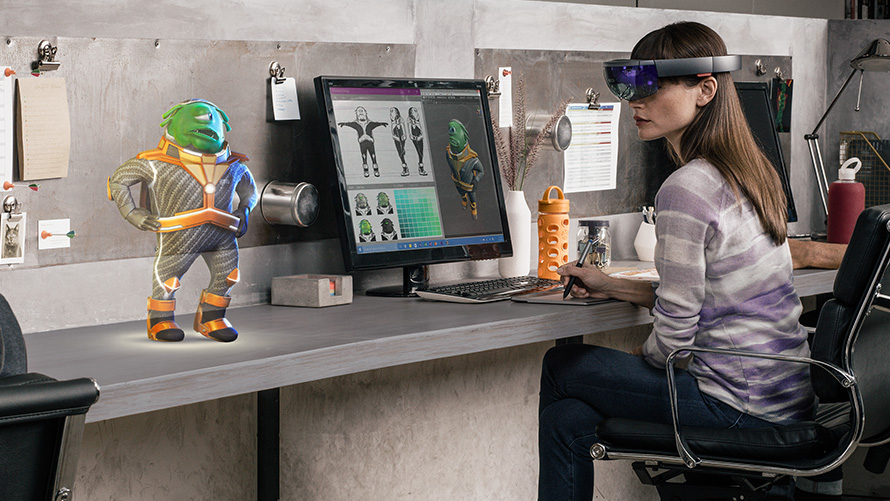
Unlike virtual reality, which creates a totally artificial environment, augmented reality uses the existing environment and overlays new information on top of it.
The reason that I am mentioning VR and AR is because you can use them when playing these video games. This is amazing! Only some games can't use VR but a lot of them can! If you look at the image above, you will see that her AR headset is connected to her computer software. You can only use VR for video games. A very popular thing to to with AR is 3D modeling like the woman is doing above.